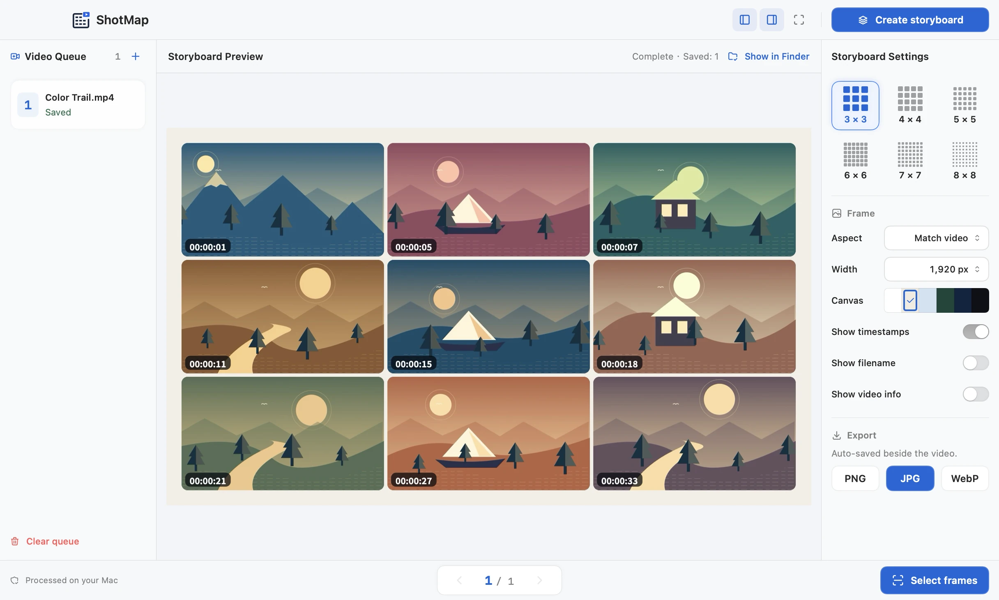

Turn an MP4 into a 3 × 3 storyboard on Mac
Automatically pick nine frames from one video and save them as a single JPG.
The examples use ShotMap 0.2.20 on macOS 13 or later and Color Trail.mp4, a 36-second, 960 × 540 sample video. Put the video in a folder where you can save files.
- Drag Color Trail.mp4 into the video queue. You can also use the + button in the queue header.
- In Storyboard Settings, select 3 × 3, Match video, 1,920 px and JPG. Keep the ivory background and turn on Show timestamps. Leave the filename and video info switches off.
- Click Create storyboard. Wait for the queue entry to show Saved and for all nine frames to appear in the preview.

Check the result
Click Show in Finder above the preview. Open the JPG beside Color Trail.mp4 and check that it contains nine tiles with timecodes.